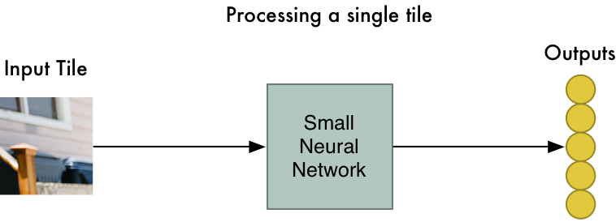

Convolutional Neural Network (CNN) adalah salah satu jenis neural network yang biasa digunakan pada data image. CNN bisa digunakan untuk mendeteksi dan mengenali object pada sebuah image. CNN adalah sebuah teknik yang terinspirasi dari cara mamalia — manusia, menghasilkan persepsi visual.
Secara garis besar Convolutional Neural Network (CNN) tidak jauh beda dengan neural network biasanya. CNN terdiri dari neuron yang memiliki weight, bias dan activation function. Convolutional layer juga terdiri dari neuron yang tersusun sedemikian rupa sehingga membentuk sebuah filter dengan panjang dan tinggi (pixels).
Secara garis besarnya, CNN memanfaatkan proses konvolusi dengan menggerakan sebuah kernel konvolusi (filter) berukuran tertentu ke sebuah gambar, komputer mendapatkan informasi representatif baru dari hasil perkalian bagian gambar tersebut dengan filter yang digunakan.
Dari gambar seorang anak kecil yang menaiki kuda mainan diatas, hasil dari proses konvolusi dapat diilustrasikan sebagai berikut ini:

Dengan ini, gambar asli dari seorang anak kecil diatas menjadi 77 gambar yang lebih kecil dengan konvolusi yang sama.
Setiap gambar kecil dari hasil konvolusi tersebut kemudian dijadikan input untuk menghasilkan sebuah representasi fitur. Hal ini memberikan CNN kemampuan mengenali sebuah objek, dimanapun posisi objek tersebut muncul pada sebuah gambar.

Proses ini dilakukan untuk semua bagian dari masing-masing gambar kecilnya, dengan menggunakan filter yang sama. Dengan kata lain, setiap bagian gambar akan memiliki faktor pengali yang sama, atau dalam konteks neural network disebut sebagai weights sharing. Jika ada sesuatu yang tampak menarik di setiap gambarnya, maka akan ditandai bagian itu sebagai object of interest.
Maka akan terlihat seperti ini:
Pada langkah 3, array masih terlalu besar, maka untuk mengecilkan ukuran array nya digunakan downsampling yang penggunaannya dinamakan max pooling atau mengambil nilai pixel terbesar di setiap pooling kernel. Dengan begitu, sekalipun mengurangi jumlah parameter, informasi terpenting dari bagian tersebut tetap diambil.
Sejauh ini, kita telah merubah dari gambar yang berukuran besar menjadi array yang cukup kecil. Nah, array merupakan sekelompok angka, jadi dengan menggunakan array kecil itu kita bisa inputkan ke dalam jaringan saraf lain. Jaringan saraf yang paling terakhir akan memutuskan apakah gambarnya cocok atau tidak. Untuk memberikan perbedaan dari langkah konvolusi, maka bisa kita sebut dengan “fully connected” network.
Secara garis besarnya, langkah-langkah diatas tampak seperti gambar berikut ini :
https://medium.com/@16611110/apa-itu-convolutional-neural-network-836f70b193a4
Wa Ode Arum Putri Wahidah Dani 07.05.2021 Friday, 16:50pm
Comments
Wah, aku jadi makin paham nih sama langkah kerja algoritma CNN. Terima kasih!
Penjabarannya sangat baik, pembaca jadi mudah memahami.